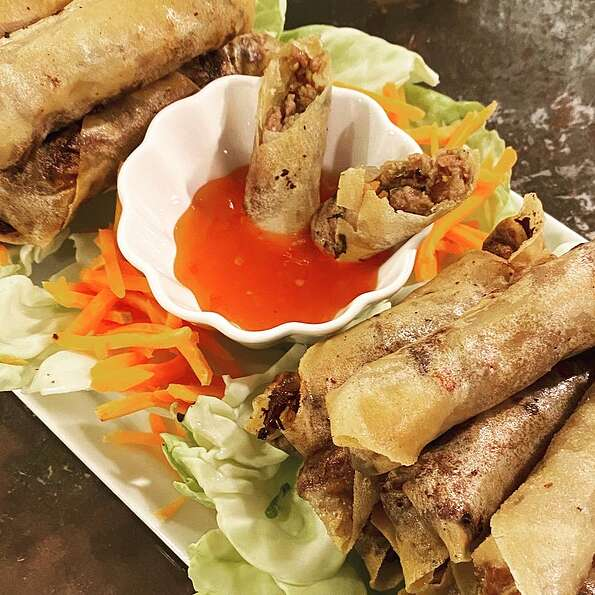

Lumpia

Description
This is a traditional Filipino dish. It is the Filipino version of the egg rolls. It can be served as a side dish or as an appetizer.
Ingredients
- 1 tablespoon vegetable oil
- 1 pound ground pork
- 2 cloves garlic, crushed
- ½ cup chopped onion
- ½ cup minced carrots
- ½ cup chopped green onions
- ½ cup thinly sliced green cabbage
- 1 teaspoon ground black pepper
- 1 teaspoon salt
- 1 teaspoon garlic powder
- 1 teaspoon soy sauce
- 30 lumpia wrappers
- 2 cups vegetable oil for frying